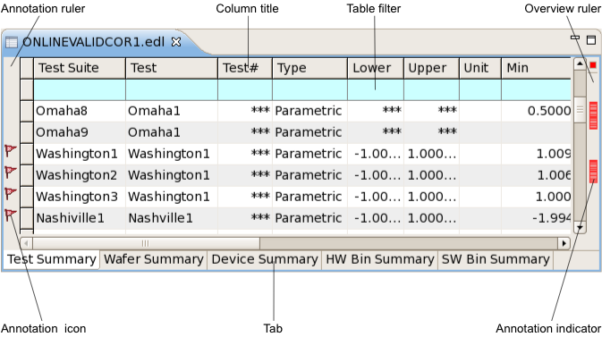

Data navigation views
The data navigation section of the Result perspective contains one data navigation view for each opened data store. Each data navigation view contains up to five tabs that display different kinds of summaries for the data store:
- Test summary
- Wafer summary (not present for correlation data stores)
- Device summary (not present for correlation data stores)
- Hardware bin summary
- Software bin summary
Note that the views are static for data log files (their content does not change), but the view system data log stream is dynamic: If new data log entries are generated by a running test, they are immediately added to the open log. The summaries and result displays are updated accordingly.

Toolbar
There is a toolbar for the data navigation views that is displayed as part of the main SmarTest toolbar:
The toolbar contains buttons that let you group the test summaries displayed in the frontmost tab of the data navigation views. Grouping means that each summary, instead of being displayed in one row, is split up into one row for each subcategory. For example, if a test summary table is grouped by site, the results for each test that is summarized in the table are displayed separately for each site instead of all together in one row.
These buttons are available for test summary tabs:
- Refresh. Updates the system data log stream display with the latest logged data when
it is paused (see below), but does not turn on automatic updating again, like
Resume does.
This button is available only if the frontmost tab is the test summary tab of the system data log stream.
- Pause. Pauses updates from the system data log stream. For details, see the
Pause shortcut menu command in Test summary tab. If this button
is clicked, it changes to Resume (see below).
This button is available only if the frontmost tab is the test summary tab of the system data log stream.
- Resume. Resumes updates from the system data log stream. For details, see the
Resume shortcut menu command in Test summary tab. If this button
is clicked, it changes to Pause (see above).
This button is available only if the frontmost tab is the test summary tab of the system data log stream.
- Clear. Removes all current entries from the system data log stream display in the
Integrated Result Tool and clears the system event stream.
This button is available only if the frontmost tab is the test summary tab of the system data log stream.
- Save and Clear. Displays a standard Save dialog in which you can save the current
system event stream as an EDL file. After you have saved the file, all current entries from the
system data log stream display in the Integrated Result Tool are removed and the system event
stream is cleared.
This button is available only if the frontmost tab is the test summary tab of the system data log stream.
- Group by wafer
- Group by site
Grouping by site is also available from the shortcut menu of hardware bin summary tabs and software bin summary tabs (though the toolbar button is disabled in these views).
- Group by pin
If the frontmost tab is not a test summary tab, the buttons are disabled.
Functional changes
- Introduced in SmarTest 7.2.0
- SmarTest 7.2.2: New "Refresh", "Clear", and "Save and Clear" buttons.
- SmarTest 7.2.2: New Save and Clear shortcut menu command.